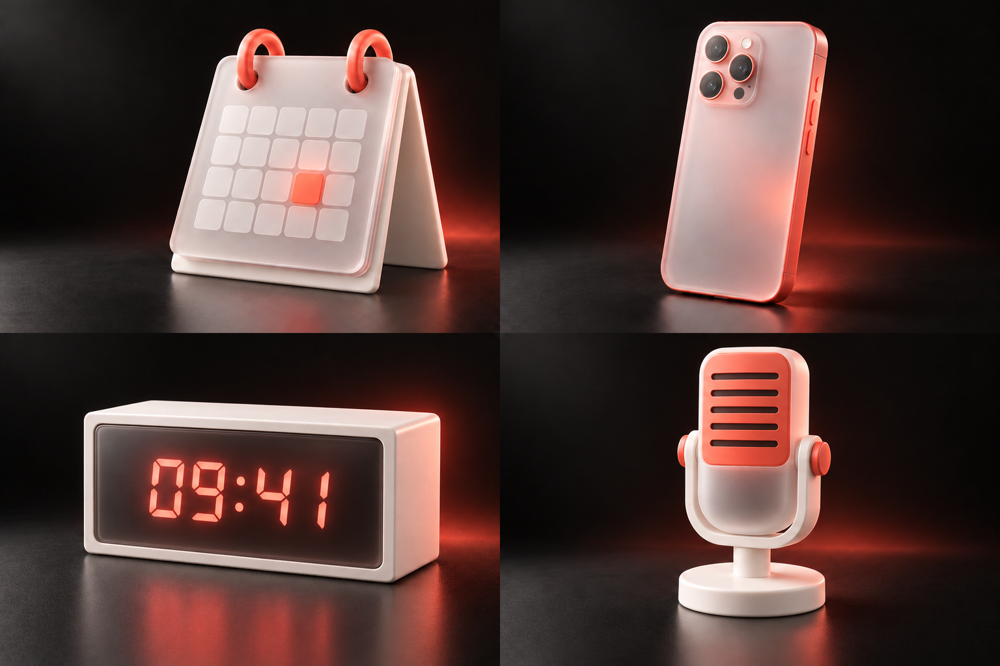
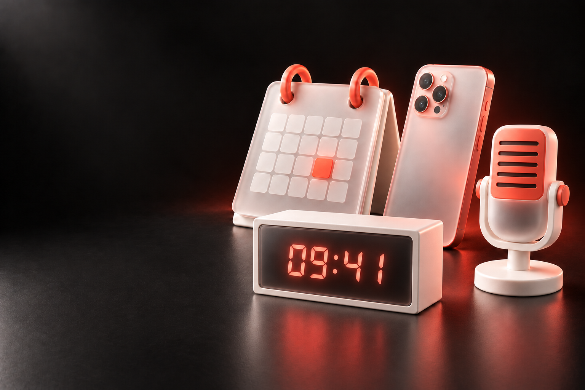

Второе ревью / 01 · уточнение формы
Узнаваемые предметы.
Собственный характер.
Календарь, телефон, электронные часы и микрофон. У каждого — своя конструкция и силуэт. Общими остаются матовое стекло, мягкий пластик и коралловый свет.

Сгенерированный лист исследования. Четыре предмета, ещё не отдельные прозрачные иконки.
02 / Композиция и авторство
Предметы вместе.
Знак — на своём месте.

От мысли
к действию.
Крупный знак уравновешивает предметную группу. Его геометрия остаётся точной: он наложен отдельным SVG, а не нарисован генератором внутри изображения.
03 / Геометрия как основа
Четыре линии.
Один знак.
Вертикаль вверх, горизонталь вправо, диагональный луч вверх-вправо и пересекающая точку диагональ. Углы, длины и квадратные окончания перенесены из функции computeLogoMark сайта.
В этой пробе знак работает в двух масштабах: компактная подпись рядом с именем и крупный элемент композиции. Следующий возможный шаг — исследовать его как объёмный стеклянный объект, сохраняя исходный вектор эталоном.
Скачать точный SVG ↓
04 / Оценка пробы
Материалы связывают коллекцию, а конструкция различает предметы. Это направление ближе к предметной иллюстрации, чем предыдущие стеклянные карточки.
Перед выпуском: упростить камеры телефона, чтобы уменьшить сходство с конкретной моделью; проверить календарь в маленьком размере; проверить читаемость предметов при уменьшении.
Микрофон — визуальный сюжет будущего голосового сценария: реальная запись в изученном прототипе не реализована. Часы — метафора времени, не обещание отдельного будильника. Ни лайма, ни изменения исходного сайта.